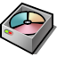
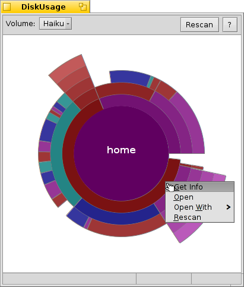

Русский
Русский Català
Català Deutsch
Deutsch English
English Español
Español Français
Français Italiano
Italiano Magyar
Magyar Polski
Polski Português
Português Português (Brazil)
Português (Brazil) Română
Română Slovenčina
Slovenčina Suomi
Suomi Svenska
Svenska 中文 ［中文］
中文 ［中文］ Українська
Українська 日本語
日本語Использование диска (DiskUsage)
| Расположение в Deskbar: | ||
| Расположение в Tracker: | /boot/system/apps/DiskUsage | |
| Настройки хранятся по адресу: | ~/config/settings/DiskUsage |
Использование диска графически отображает дисковое пространство на ваших разделах. Полезный инструмент для ответа на вопрос: "Куда подевалось свободное место на диске"?
After launching, DiskUsage shows only an empty window with all mounted volumes as tabs at the top. You'll have to choose the one you're interested in and click to start chugging through the disk. For larger disks this can take some time... While you wait, you may switch to a different tab and start exploring that volume or begin the scan process there as well.
It's not recommended to start several concurrent scan processes on the same physical disk, as the constant repositioning of the heads of the drive will only extend the wait.

Концентрические круги представляют собой различные уровни в иерархии файловой системы. Над центральным кругом изображена папка /boot/home/. Каждый сегмент окружности над ней - файл или папка, находящиеся в /boot/home/. Каждый дальнейший сегмент отображает на один уровень вглубь файловой иерархии. Возможно придется изменить размеры окна, чтобы папки с большой степенью вложенности смогли вместиться в него.
- Если графическое представление файла или папки умещается меньше, чем в 2° круга, то оно не отображается.
- Количество файлов, сообщённое для папки, включает также файлы во вложенных папках. Папка подсчитывается также как файл.
- Использование диска игнорирует симлинки.
Наведя мышь на определённый сегмент, вы получите информацию об этом файле или папке снизу в строке состояния.
Right-clicking a segment offers a context menu to , (with Tracker), another suitable application or that particular folder.
Left-clicking a segment makes that file/folder the center circle.
Left-clicking the center circle moves you up one level.
Вы можете перетаскивать файлы и папки из DiskUsage в другие приложения, на рабочий стол или на другое окно Tracker-а для копирования. Если же наоборот перетащить раздел или папку на окно DiskUsage, то размер окна "подгонится" под них, сделав их новым центральным кругом.
You can also use the Tracker add-on from the context menu of any folder to start DiskUsage with that particular location.